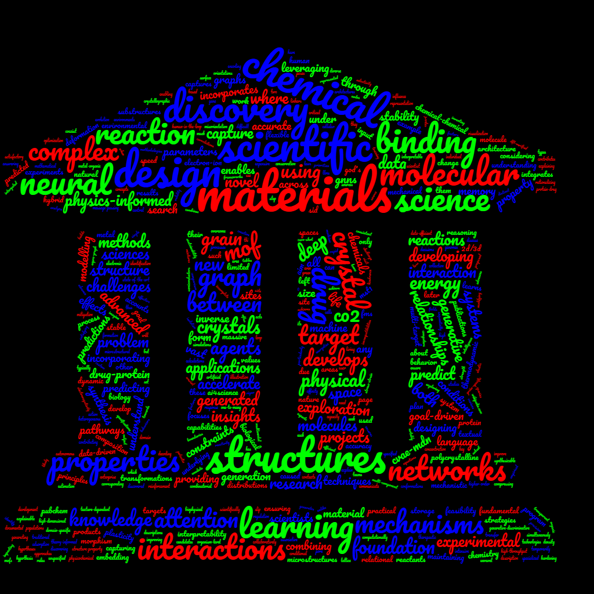

Systems that ground themselves in literature and data, generate hypotheses, write analysis code, plan experiments, and communicate findings, with experts in the loop.
AI for Science
AI co-scientist.
An AI colleague for research that proposes ideas, checks them against the literature, and runs the experiments. We build the co-scientist and test it against strong non-AI methods on problems it has never seen.

On each task, at a stated budget: does agent-driven research beat the strongest non-AI alternative at matched compute, on data it never saw?
Cancer biology, materials and crystal design, combinatorial geometry, and mathematics.
Three strands
Ideas, tests, and a domain to prove it on.
Generating and filtering ideas
A platform that produces original, falsifiable, small-lab-feasible research directions, then attacks them. Each idea must resolve against real prior art, and survive adversarial kill-tests, before it counts as novel.
Do agents beat search?
Runs coding agents on a contracted computational task under evaluation the agent cannot touch, against non-LLM search at matched compute, on sealed data scored once. Every number in a report can be re-derived from stored artefacts.
Materials, with the claims audited
Generative models for crystal structures and magnetic materials, built on published methods and checked against pre-registered bars and stability checks.
What we have built
Discovery testbeds where the co-scientist is measured.
Predicting dependencies
A coding agent outperformed the strongest non-LLM method across most held-out tumour types.
Improved constructions
Agents found configurations that improve on published best-known values, each verified exactly.
Generative crystal design
Generative models for crystals and magnets with uncertainty-aware rewards and stability screening.
Ideas that survive scrutiny
Hypotheses must clear real prior art and adversarial challenge before they count as new.
In progress
Toward an AI that invents, and shows its work.
Our co-scientist is measured against the state of the art on outcomes, not impressions.
Against the best AI scientists
Side-by-side comparison with leading AI co-scientists under matched compute and sealed evaluation.
Predicting the literature
Testing whether hypotheses generated today anticipate findings published later.
From new ideas to new results
Ideas drawn from outside a field, kept only when they win and the borrowed principle is the reason.
Omics and beyond
Applying the ideation loop to sealed analyses on real biological data.
We are building the co-scientist with researchers across disciplines, and we are looking for:
- PhD students and postdocs in agentic AI, scientific discovery and mathematics.
- Domain collaborators in biology, materials, chemistry and mathematics.
- Compute, model-access and funding partners for long-horizon campaigns.
We are growing the team and its partnerships. Students, postdocs, clinicians, researchers and sponsors are welcome to get in touch.
Join, partner, or support the workNew testbeds, onboarded from a single contract file, and campaigns that run on sealed data from first idea to verified result.